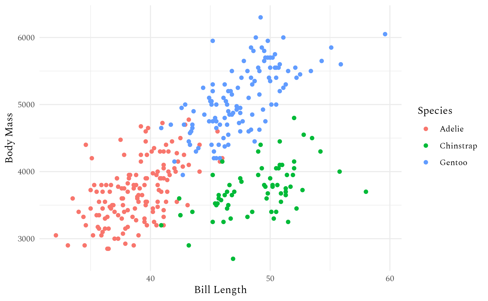

This text expects a basic understanding of fonts and typography. If you feel like you could use a brush-up you can consult this light introduction to the subject.
systemfonts is designed to give R a modern text rendering stack. That’s unfortunately impossible without coordination with the graphics device, which means that to use all these features you need a supported graphics device. There are currently two options:
- The ragg package provides graphics devices for rendering raster graphics in a variety of formats (PNG, JPEG, TIFF) and uses systemfonts and textshaping extensively.
- The svglite package provides a graphic device for rendering vector graphics to SVG using systemfonts and textshaping for text.
You might notice there’s currently a big hole in this workflow: PDFs. This is something we plan to work on in the future.
A systemfonts based workflow
With all that said, how do you actually use systemfonts to use custom fonts in your plots? First, you’ll need to use ragg or svglite.
Using ragg
While there is no way to unilaterally make
ragg::agg_png() the default everywhere, it’s possible to
get close:
Positron: recent versions automatically use ragg for the plot pane if it’s installed.
RStudio IDE: set “AGG” as the backend under Global Options > General > Graphics.
ggplot2::ggsave(): ragg will be automatically used for raster output if installed.-
R Markdown and Quarto: you need to set the
devoption to"ragg_png". You can either do this with code:#| include: false knitr::opts_chunk$set(dev = "ragg_png")Or in Quarto, you can set it in the yaml metadata:
If you want to use a font installed on your computer, you’re done!
grid::grid.text(
"Spectral üéâ",
gp = grid::gpar(fontfamily = "Spectral", fontface = 2, fontsize = 30)
)Or, if using ggplot2
library(ggplot2)
ggplot(na.omit(penguins)) +
geom_point(aes(x = bill_len, y = body_mass, colour = species)) +
labs(x = "Bill Length", y = "Body Mass", colour = "Species") +
theme_minimal(base_family = "Spectral")
If the results don’t look as you expect, you can use various systemfonts helpers to diagnose the problem:
systemfonts::match_fonts("Spectral", weight = "bold")
#> # A tibble: 1 × 3
#> path index features
#> <chr> <int> <list>
#> 1 /tmp/Rtmp7kMdkS/Spectral-700.ttf 0 <font_ftr>
systemfonts::font_fallback("üéâ", family = "Spectral", weight = "bold")
#> path index
#> 1 /usr/share/fonts/truetype/noto/NotoColorEmoji.ttf 0If you want to see all the fonts that are available for use, you can
use systemfonts::system_fonts()
systemfonts::system_fonts()Extra font styles
As we discussed above, the R interface only allows you to select
between four styles: plain, italic, bold, and bold-italic. If you want
to use a thin font, you have no way of communicating this wish to the
device. To overcome this, systemfonts provides
register_variant() which allows you to register a font with
a new typeface name. For example, to use the light font from the
Spectral typeface you can register it as follows:
systemfonts::register_variant(
name = "Spectral Light",
family = "Spectral",
weight = "light"
)Now you can use Spectral Light where you would otherwise specify the typeface:
grid::grid.text(
"Light weight is soo classy",
gp = grid::gpar(fontfamily = "Spectral Light", fontsize = 30)
)register_variant() also allows you to turn on font
features otherwise hidden away:
systemfonts::register_variant(
name = "Spectral Small Caps",
family = "Spectral",
features = systemfonts::font_feature(
letters = "small_caps"
)
)
grid::grid.text(
"All caps — Small caps",
gp = grid::gpar(fontfamily = "Spectral Small Caps", fontsize = 30)
)Fonts from other places
Historically, systemfonts primary role was to access the font
installed on your computer, the system fonts. But what
if you’re using a computer where you don’t have the rights to install
new fonts, or you don’t want the hassle of installing a font just to use
it for a single plot? That’s the problem solved by
systemfonts::add_font() which makes it easy to use a font
based on a path. But in many cases you don’t even need that as
systemfont now scans ./fonts and ~/fonts and
adds any font files it find. This means that you can put personal fonts
in a fonts folder in your home directory, and project fonts in a fonts
directory at the root of the project. This is a great way to ensure that
specific fonts are available when you deploy some code to a server.
And you don’t even need to leave R to populate these folders.
systemfonts::get_from_google_fonts() will download and
install a google font in ~/fonts:
systemfonts::get_from_google_fonts("Barrio")
grid::grid.text(
"A new font a day keeps Tufte away",
gp = grid::gpar(fontfamily = "Barrio", fontsize = 30)
)And if you want to make sure this code works for anyone using your
code (regardless of whether or not they already have the font
installed), you can use systemfonts::require_font(). If the
font isn’t already installed, this function download it from one of the
repositories it knows about. If it can’t find it it will either throw an
error (the default) or remap the name to another font so that plotting
will still succeed.
systemfonts::require_font("Rubik Distressed")
#> Trying Google Fonts... Found! Downloading font to /tmp/Rtmp7kMdkS
grid::grid.text(
"There are no bad fonts\nonly bad text",
gp = grid::gpar(fontfamily = "Rubik Distressed", fontsize = 30)
)
By default, require_font() places new fonts in a
temporary folder so it doesn’t pollute your carefully curated collection
of fonts.
Font embedding in SVG
Fonts work a little differently in vector formats like SVG. These formats include the raw text and only render the font when you open the file. This makes for small, accessible files with crisp text at every level of zoom. But it comes with a price: since the text is rendered when it’s opened, it relies on the font in use being available on the viewer’s computer. This obviously puts you at the mercy of their font selection, so if you want consistent outputs you’ll need to embed the font.
In SVG, you can embed fonts using an @import statement
in the stylesheet, and can point to a web resource so the SVG doesn’t
need to contain the entire font. systemfonts provides facilities to
generate URLs for import statements and can provide them in a variety of
formats:
systemfonts::fonts_as_import("Barrio")
#> [1] "https://fonts.bunny.net/css2?family=Barrio&display=swap"
systemfonts::fonts_as_import("Rubik Distressed", type = "link")
#> [1] "<link rel=\"stylesheet\" href=\"https://fonts.bunny.net/css2?family=Rubik+Distressed&display=swap\"/>"Further, if the font is not available from a given online repository, it can embed the font data directly into the URL:
substr(systemfonts::fonts_as_import("Arial", repositories = NULL), 1, 200)
#> Warning in systemfonts::fonts_as_import("Arial", repositories = NULL):
#> No import found for Arial
#> character(0)svglite uses this feature to allow seamless font embedding with the
web_fonts argument. It can take a URL as returned by
fonts_as_import() or just the name of the typeface and the
URL will automatically be resolved. Look at line 6 in the SVG generated
below
svg <- svglite::svgstring(web_fonts = "Barrio")
grid::grid.text("Example", gp = grid::gpar(fontfamily = "Barrio"))
invisible(dev.off())
svg()
#> <?xml version='1.0' encoding='UTF-8' ?>
#> <svg xmlns='http://www.w3.org/2000/svg' xmlns:xlink='http://www.w3.org/1999/xlink' width='720.00pt' height='576.00pt' viewBox='0 0 720.00 576.00'>
#> <g class='svglite'>
#> <defs>
#> <style type='text/css'><![CDATA[
#> @import url('https://fonts.bunny.net/css2?family=Barrio&display=swap');
#> .svglite line, .svglite polyline, .svglite polygon, .svglite path, .svglite rect, .svglite circle {
#> fill: none;
#> stroke: #000000;
#> stroke-linecap: round;
#> stroke-linejoin: round;
#> stroke-miterlimit: 10.00;
#> }
#> .svglite text {
#> white-space: pre;
#> }
#> .svglite g.glyphgroup path {
#> fill: inherit;
#> stroke: none;
#> }
#> ]]></style>
#> </defs>
#> <rect width='100%' height='100%' style='stroke: none; fill: #FFFFFF;'/>
#> <defs>
#> <clipPath id='cpMC4wMHw3MjAuMDB8MC4wMHw1NzYuMDA='>
#> <rect x='0.00' y='0.00' width='720.00' height='576.00' />
#> </clipPath>
#> </defs>
#> <g clip-path='url(#cpMC4wMHw3MjAuMDB8MC4wMHw1NzYuMDA=)'>
#> <text x='360.00' y='292.32' text-anchor='middle' style='font-size: 12.00px; font-family: "Barrio";' textLength='48.12px' lengthAdjust='spacingAndGlyphs'>Example</text>
#> </g>
#> </g>
#> </svg>Want more?
This text has mainly focused on how to use the fonts you desire from within R. R has other limitations when it comes to text rendering specifically how to render text that consists of a mix of fonts. This has been solved by marquee and the curious soul can continue there in order to up their skills in rendering text with R.